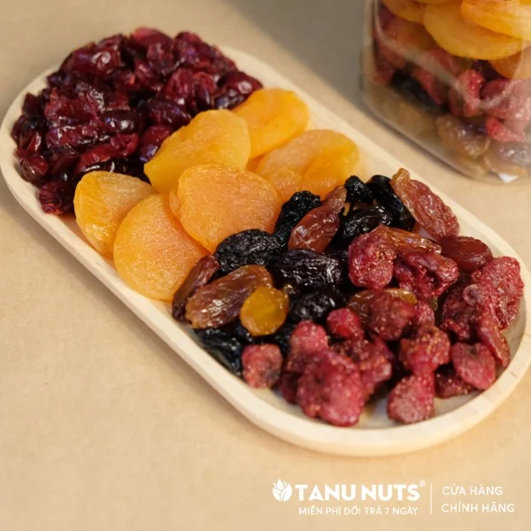

Bài viết gần đây


CÔNG DỤNG BẤT NGỜ CỦA CÁC LOẠI QUẢ SẤY
Quả Sấy là những loại quả mà phần lớn lượng nước được loại bỏ, bằng một cách tự nhiên qua ánh nắng mặt trời làm khô hoặc sử dụng máy sấy chuyên dụng. Có truyền thống lâu đời và được đánh giá cao vì hương vị ngọt ngào, giá trị dinh dưỡng và bảo quản được lâu dài. Và hiện nay đồ ăn vặt đang được thay thế dần bằng các loại hạt và trái cây sấy khô tốt cho sức khoẻ.

Công dụng của các loại quả sấy:
 Quả sấy được coi là món ăn vặt lành mạnh, rất tốt cho trẻ nhỏ, phụ nữ mang thai và phụ nữ sau sinh.
Quả sấy được coi là món ăn vặt lành mạnh, rất tốt cho trẻ nhỏ, phụ nữ mang thai và phụ nữ sau sinh.
 Tăng cường sức khoẻ tim mạch, ngăn ngừa ung thư.
Tăng cường sức khoẻ tim mạch, ngăn ngừa ung thư.
 Ngăn ngừa thiếu máu do thiếu sắt.
Ngăn ngừa thiếu máu do thiếu sắt.
 Nho sấy là bữa ăn nhẹ lành mạnh cho bệnh nhân tiểu đường loại 2: giúp làm giảm 23% nồng độ đường glucose sau bữa ăn và giảm các chỉ số huyết áp.
Nho sấy là bữa ăn nhẹ lành mạnh cho bệnh nhân tiểu đường loại 2: giúp làm giảm 23% nồng độ đường glucose sau bữa ăn và giảm các chỉ số huyết áp.
 Mơ sấy dẻo chứa cellulose và pectin, hai loại thuốc nhuận tràng từ thiên nhiên. Có tác dụng chữa táo bón hay tiêu chảy rất hiệu quả.
Mơ sấy dẻo chứa cellulose và pectin, hai loại thuốc nhuận tràng từ thiên nhiên. Có tác dụng chữa táo bón hay tiêu chảy rất hiệu quả.
 Nam việt quất giúp làm hạ cholesterol mà không có tác dụng phụ.
Nam việt quất giúp làm hạ cholesterol mà không có tác dụng phụ.
 Ngoài hạt dinh dưỡng thì các loại
Quả Sấy
cũng là 1 lựa chọn tuyệt vời cho những ai vừa muốn thay đổi khẩu vị, vừa muốn ăn vặt lành mạnh đấy nhé ^^
Ngoài hạt dinh dưỡng thì các loại
Quả Sấy
cũng là 1 lựa chọn tuyệt vời cho những ai vừa muốn thay đổi khẩu vị, vừa muốn ăn vặt lành mạnh đấy nhé ^^